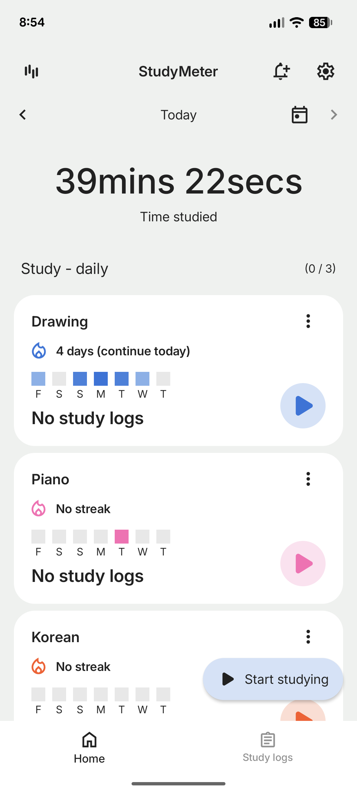
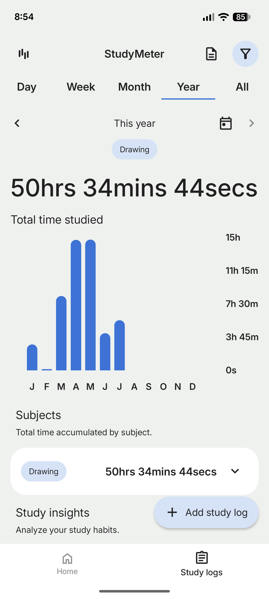
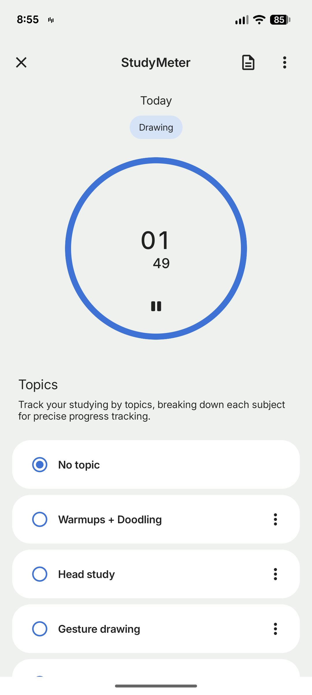
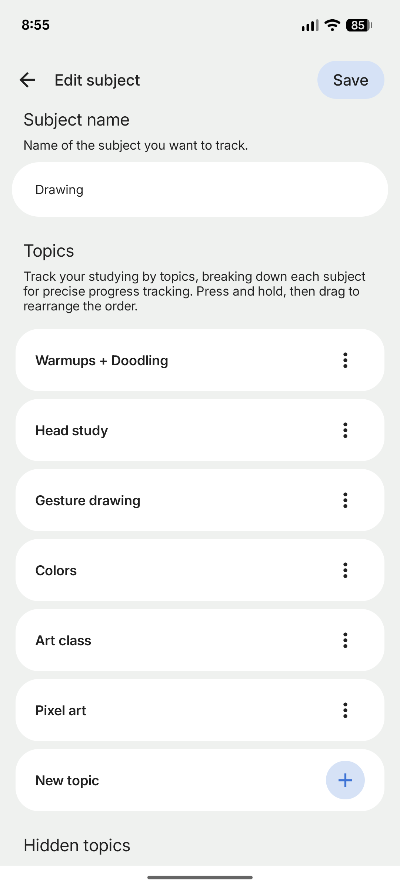
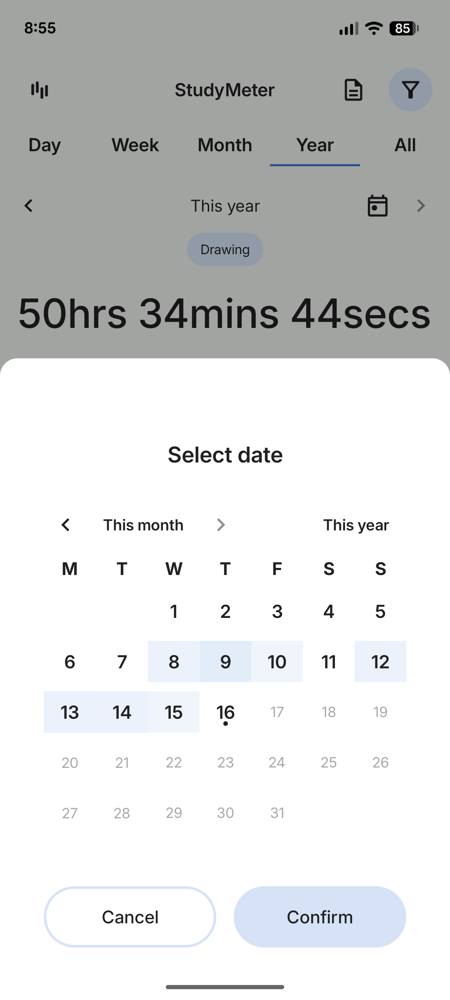
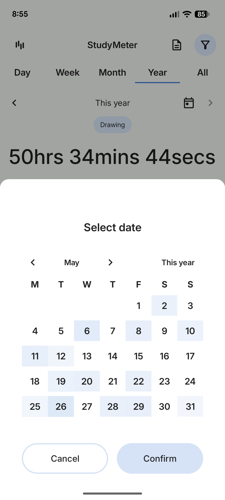
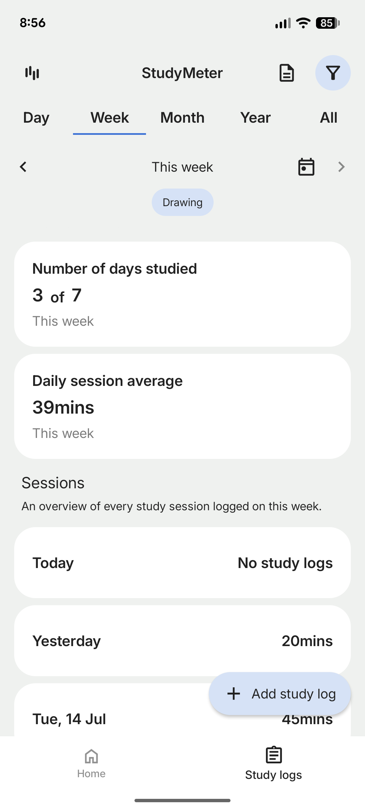
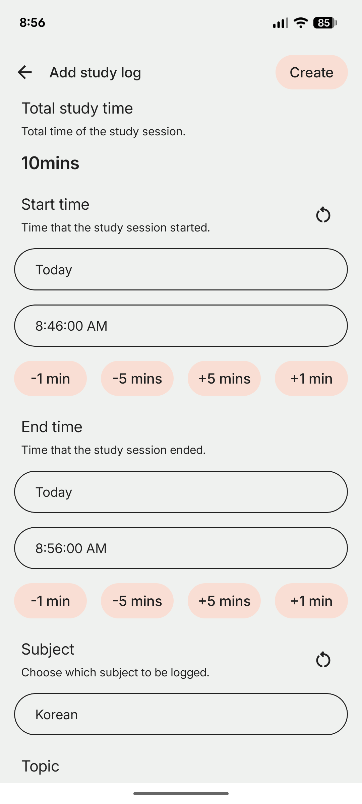

A Kotlin Multiplatform productivity app to help you stay consistent and track how you spend your study time.
Create subjects like Drawing, Piano, or Korean, and break them down into topics for precise tracking. Start a timer to log sessions in real time, or manually add study logs with start and end times. Track your daily streaks, view weekly and yearly statistics, and analyze your study habits with detailed insights — including days studied, session averages, and time accumulated per subject.







